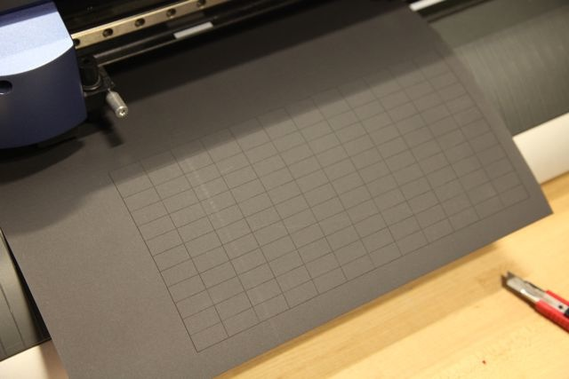
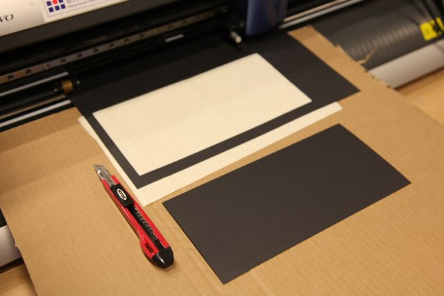
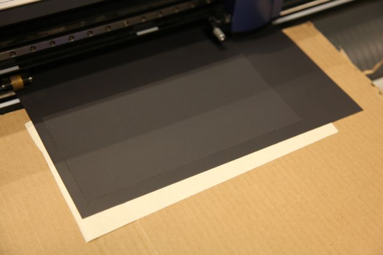

6.849: geometric folding algorithms
During this project, scoring polypropelyne on the vinyl cutter quickly became one of my favorite processes. Essentially, the vinyl cutter is a computer-controlled knife, with variable speed and pressure. Polypropelyne is the material commonly used to make living hinges, monolithic hinge mechanisms make from fatigue resistant materials. The example you may be most familiar with is the top of a Tic-Tac box. I used .017" polypropelyne sheets from McMaster-Carr, but academic folders are commonly made from polypropelyne as well.
By scoring, or cutting partially through the polypropelyne, we can tell the material where we would like it to fold. This makes the precreasing process quick and easy. The only catch is that mountain-valley patterns require scoring on both sides. The pictures below detail this slightly tricky process:
|  |
 |
 |
First, we score one set of folds, say mountains, as well as an outline of the crease pattern. Leaving the stock in the machine, we cut along the outline and remove the crease pattern. Under the hole that is left we apply masking tape, and then we flip the crease pattern and stick it to the tape. Now we can score the valley folds. It is important to remember the axis of reflection when we flip the piece and flip the corresponding geometry before scoring. In the stent example code, the SVG output automatically flips the second cut file about the horizontal.
#make cut files
cut1 = Scene.from_scene(scene,'stent-cut1')
cut1.add_layers([mountain,cut])
cut1.write_svg()
cut2 = Scene.from_scene(scene,'stent-cut2')
valley.mirror([0,0],[1,0]) #mirror about horizontal for material flip
cut2.add_layers([valley])
cut2.write_svg()
If everything worked out, the precreasing should be a quick process. For complex patterns like this stent, working in the final shape can still be time consuming but rewarding in the end. In the python for the stent, I added lacing holes along the seam to help join up the edge.

Curved creases are no problem for the vinyl cutter. Below is a clone of Huffman's Tower that I made:

I am excited to continue using this process to experiment with curved crease folding. Polypropelyne is a fantastic material to test crease patterns: it can withstand more abuse than paper, but it isn't rigid like many other CNC folding materials (e.g. cardboard).
{kind=link}
{kind=link}
6.849 2012